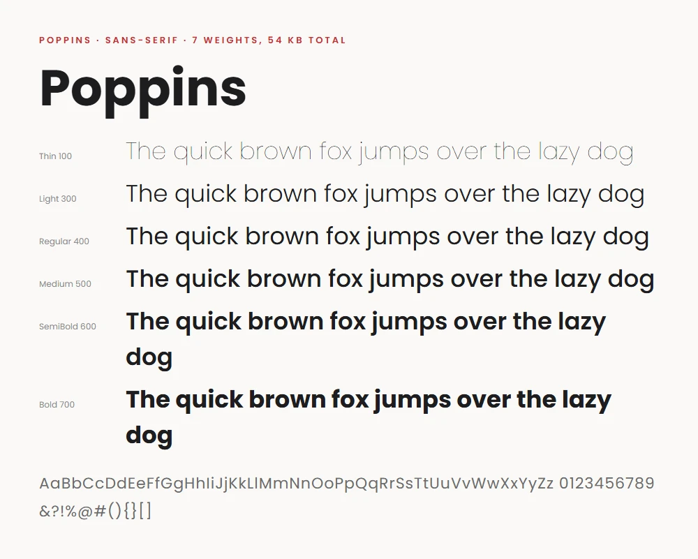
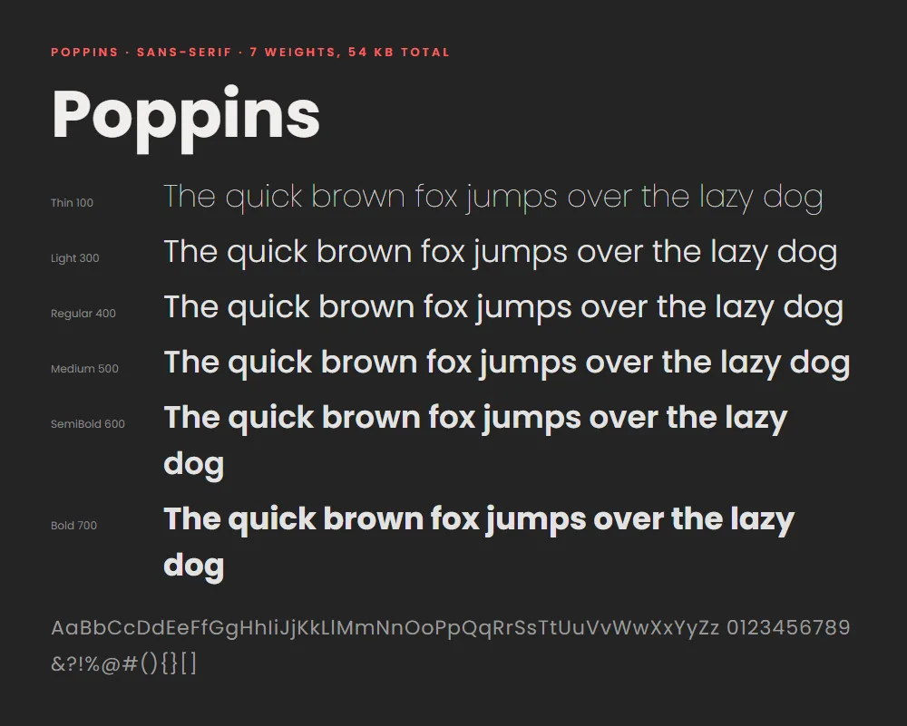
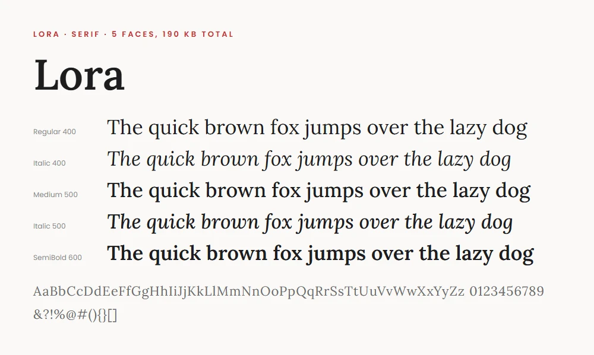
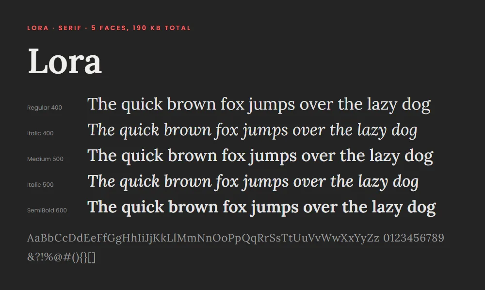

Self-Hosting Your Fonts
The text you're reading is set in Poppins (no, not Mary Poppins), the serifs in the pull quotes are Lora, and until recently both arrived from Google's servers, the way fonts arrive on roughly half the web. Now they're served from this site itself: twelve small font files sitting in the repository next to the photos. This post is just a brief rundown on how and why I did this, and how I shrank three icon fonts by about 97% with a Python script. Part of the series on how this site is built.
Quick jargon guide
- Web font: a font file the browser downloads with the page, so visitors see your chosen typeface rather than whatever their device has installed.
- WOFF2: the modern compressed format for web fonts. Universally supported, roughly a third the size of older formats.
- @font-face: the CSS rule that tells the browser "this family name maps to this font file". Self-hosting is mostly writing these by hand.
- Icon font: a font whose "letters" are pictures (the GitHub logo, a house, an arrow). A common way to ship icons before SVG took over.
- Subsetting: deleting every glyph from a font that your site doesn't use. A font with 700 icons of which you use 5 can lose the other 695.
- Unicode range: the span of characters a font file covers. Serving just the Latin range is itself a subset: no Cyrillic or Vietnamese glyphs for a site written in English.
The why
Well, mainly because I wanted to learn about fonts. I think they're interesting: they communicate tone, a certain visual 'feel' that goes beyond the words on the page, they have interest accessibility benefits and they have some fascinating history. But, the technical reasons are: Privacy: every page view against Google Fonts tells Google's servers a visitor's IP address requested your page, and in 2022 a German court found exactly that arrangement violated the GDPR. Serving fonts yourself means your readers talk to nobody but you. Reliability and speed: a third-party font server is one more thing that can be slow, blocked (Google is unreachable in some countries), or discontinued. Self-hosted fonts arrive over the same connection as everything else. Ownership: the same philosophy as the rest of this site. Fewer moving parts owned by other people.
The counterargument used to be caching: the theory that everyone has Google's copy of Poppins cached already, so linking to it is free. That theory died in 2020 when browsers partitioned their caches per site for privacy reasons. Every site now downloads its own copy regardless, so the shared-cache benefit is actually negative, since you download it repeatedly.
The how
Google Fonts provides them, of course. Download the family, keep the WOFF2 versions of the weights you actually use, and write an @font-face block per file:
@font-face {
font-family: "Poppins";
font-style: normal;
font-weight: 400;
font-display: swap;
src: url("../fonts/vendor/poppins-400.woff2") format("woff2");
}This site carries seven weights of Poppins and five faces of Lora (the italics matter for pull quotes), Latin subset only, for a grand total of about 244 KB, less than a single photograph thumbnail-and-hero pair. The font-display: swap line is the one non-obvious part: it tells the browser to show text immediately in a fallback font and swap when the real one arrives, rather than showing nothing. Neat, right? Invisible text while a font loads is way more irritating than a brief flash of the wrong font that most people won't see.




The fun part: subsetting icon fonts
The site's template arrived with three icon fonts (FontAwesome, Themify, ElegantIcons), each carrying hundreds of icons. A count of what the site actually uses came to: five FontAwesome icons, sixteen Themify icons, and two ElegantIcons.
Using the fontTools library, a Python script scans every page and script on the site for icon class names (fa-github, ti-arrow-up, and so on), parses each vendor stylesheet to map those class names to the character codes inside the font, and then writes a new font containing only those characters. The results are satisfying in a way few optimisations are:
# Original -> subset (woff/woff2)
# FontAwesome 75.4 KB -> 1.5 KB (5 icons kept, ~98% smaller)
# Themify 54.8 KB -> 2.7 KB (16 icons kept, ~95% smaller)
# ElegantIcons 62.2 KB -> 1.2 KB (2 icons kept, ~98% smaller)The subset files live alongside the originals, and the CSS build swaps the font sources to the subsets at minification time, so the originals remain on hand for the day a new icon appears. That day is the obvious failure mode (use a new icon, forget to re-subset, icon renders as an empty box), which is why the script also writes a manifest of what's included. I have some checks in place to make sure this goes smoothly, and that will be in another blog on how "my website has a test suite".
A note on SVG icons
Would SVG icons be more modern than icon fonts? Yes, and a fresh site should use them. But the template came with icon fonts wired into everything, and three kilobytes of subset font is not a problem worth a rewrite. So, why not optimise the thing you have.
Common questions
Is self-hosting Google's fonts legal?
Yes. Fonts on Google Fonts are under open licences, mostly the SIL Open Font License, which explicitly permits serving them yourself.
How much faster is it, really?
Modest and consistent: you save a DNS lookup and TLS handshake to a third domain, which is tens to a couple of hundred milliseconds on first visit. The bigger wins are the icon subsets (about 190 KB of fonts became 5 KB) and immunity to the third party ever being slow.
Do I need all those weights?
Almost certainly not, and this site is mildly guilty: seven weights of Poppins is what the template's CSS references, so seven weights it is.
What about variable fonts?
A variable font packs every weight into one file and would replace my seven Poppins files with one. It's the right choice for a new build; I keep the static weights because they're what the download offered and the total is already small.